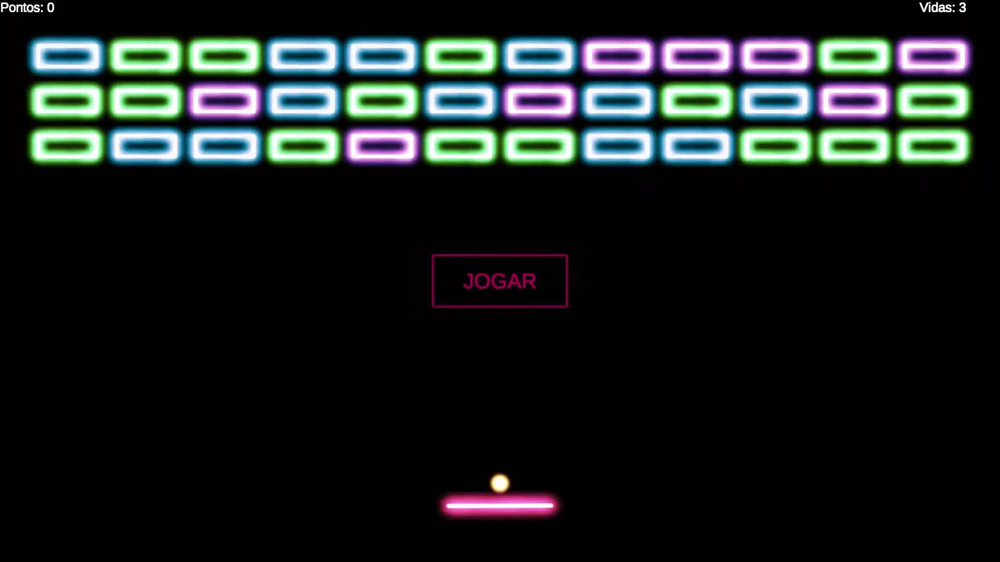

Experience
Keep a ball in play with a paddle and use its rebounds to clear a field of bricks. The ball’s changing direction makes paddle positioning the central skill.

Description
The ball’s trajectory is the central information to read. Paddle position changes the next return, which in turn determines which part of the brick field the ball can reach.
Each cleared brick changes the space above the paddle. The interaction combines anticipating a moving object with shaping its next path toward a visible goal.
Detailed features
Paddle movement
A moving ball creates a trajectory to anticipate. Paddle position changes the next rebound, linking a simple control to the longer path through the play field.
Ball rebounds
A moving ball creates a trajectory to anticipate. Paddle position changes the next rebound, linking a simple control to the longer path through the play field.
Brick clearing
A moving ball creates a trajectory to anticipate. Paddle position changes the next rebound, linking a simple control to the longer path through the play field.
Build summary
The Unity source separates the project into runtime C# components. The saved code includes rigidbody physics, collision / trigger events, ui components, runtime spawning. The script examples below identify concrete parts of this project’s implementation.
- Technology
- Unity
- Scope
- Unity project
- Feature focus
- Paddle movement
Implementation details
Implementation examples
GameManager.csBloco.csUI_Pause.csUI_Vidas.csUI_Pontos.csUI_FimDeJogo.cs
Feature video
Project recording · 1984 × 1116 · Original resolution